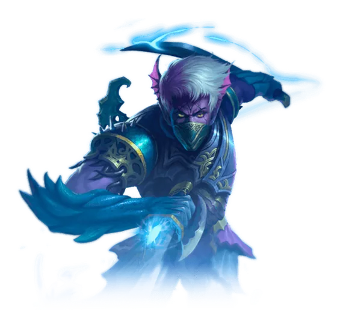

Saga do Herói: Mercenário
A guerra dos abissais contra os yakshas, contada por seis páginas de desenho que você usa como portas para o passado. Toda a saga gira em volta do Rei Dong Fanghuan, no Templo das Nuvens.

O que você ganha
Ovo de Pequeno Dongfang Lie — um mascote cosmético, que só aparece depois de ser adicionado ao Códice.
Título: Dança da Lua e Maré — +100 de HP, e colorido.
Os dois saem do baú brilhante no canto inferior direito do retrato, dentro da janela da Saga do Herói. Uma vez só por personagem.
Antes de começar
A saga pede nível 80 de pico histórico e cultivo Mahayana. E vale esperar: a experiência das missões escala até o nível 100 e para de crescer ali, então fazer antes disso é jogar fora boa parte do que a saga paga.
Como abrir
Abra a Saga do Herói, clique no Mercenário e vá a 657,144(25), na Cidade das Tormentas, falar com o Ancião das Tormentas.
O que costuma travar
As Páginas de desenho são o elevador da saga. Sempre que travar, volte ao Rei Dong Fanghuan em 663,134(41) e use a próxima no inventário.
**Em Concessão não dá para voar até 686,214(22).** É preciso entrar pela boca da caverna em 689,225(22): passando por ela, o Guarda Lu Wuqiong fica à esquerda e a passagem que serve fica à direita.
Os Vanguarda Yaksha têm teto de 12.000 de dano por golpe.
As 40 missões, em ordem
- Dongfang Lie: Convocação — fale com o Ancião das Tormentas em
657,144(25). - Dongfang Lie: Investigação — fale com o Ancião e vá a
578,120(29). - Dongfang Lie: Reforço — cave os quatro Selos da Maré Sombria: Vento em
578,120(31), Água em569,116(31), Fogo em578,111(31)e Céu em575,116(30). - Dongfang Lie: Som repentino — vá a
579,101(22), receba o Sinalizador e clique nele com o botão direito. - Dongfang Lie: Guerra — vá a
578,103(22), derrote 10 Vanguarda Yaksha e fale com o General Lu Guihai em579,102(22). - Dongfang Lie: Dispositivo — pegue no General Lu Guihai, cave o Dispositivo exótico em
584,94(19)e entregue ao Ancião das Tormentas em657,144(25). - Dongfang Lie: Rei dos Abissai — fale com o Ancião, entre no portal giratório em
656,147(25)e procure o Rei Dong Fanghuan em663,134(41), no Templo das Nuvens. - Dongfang Lie: Álbum — fale com o Rei, cave o Álbum de desenhos antigo em
663,135(41), fale com ele outra vez e use a Página de desenho I. - Dongfang Lie: vento na Ilha — fale com Dongfang Lie em
656,145(25). - Dongfang Lie: Infância — fale com Xiyue em
656,146(25)e depois com Donfang Huan, que segue você. - Dongfang Lie: Crescer — conclui sozinha depois da cena.
- Dongfang Lie: Primeira missão — fale com o Rei em
663,134(41)e use a Página de desenho II. - Posto das Lanças Cegas — fale com Donfang Huan, que segue você.
- Dongfang Lie: Certo e Errado — fale com o Major Lu Xing em
517,159(24)e depois com Donfang Huan. - Dongfang Lie: Místicos — fale com o Rei em
663,134(41)e use a Página de desenho III. - Preparação para a batalha — fale com o Ancião Abissal em
617,107(21). - Dongfang Lie: Novamissão — fale com o Líder do Pavilhão em
617,106(21)e depois com Donfang Huan. - Dongfang Lie: Pista secreta — abra o Mapa Secreto no inventário e siga até
646,219(21). - Dongfang Lie: Cooperação — fale com a Garota Misteriosa em
645,219(21)e vá a658,204(21), na Vila da Presa do Dragão. - Dongfang Lie: Investigação — volte a
645,219(21), fale com a Garota Misteriosa e vá a659,209(21). - Dongfang Lie: Alvo — vá a
659,209(21)e espere o teleporte. - Dongfang Lie: Fuga — espere a cena terminar.
- Dongfang Lie· Até breve — vá a
651,281(24)e fale com a Garota Misteriosa. - Dongfang Lie: Tensão — fale com o Rei em
663,134(41)e use a Página de desenho IV. - Dongfang Lie: Briga — fale com o Líder do Pavilhão em
617,106(21). - Dongfang Lie: Interrogatório — fale com Xijue em
617,106(21). - Dongfang Lie: Concessão — fale com Donfang Huan e chegue a
686,214(22)pela entrada da caverna em689,225(22). - Dongfang Lie: Piorar — fale com Xijue em
686,215(21), vá a616,120(22)e fale com Feng Xing. - Dongfang Lie: Última guerra — fale com o Rei em
663,134(41)e use a Página de desenho V. - Campo de batalha — use a Página de desenho e espere o teleporte para a Terra dos Sussurros.
- Dongfang Lie: Preparação — fale com Feng Xing em
689,272(22), cave 5 Bombas Fogo da Terra ali e fale com Donfang Huan. - Dongfang Lie: Amor — fale com Xijue em
687,270(22). - Dongfang Lie: Defesa — fale com Xijue e encha a barra até 100 pontos: Yaksha com Lança e Mago das Trevas Yaksha dão 10 cada, Vanguarda Yaksha dá 20. Depois fale com ele.
- Dongfang Lie: Ação — fale com Xijue em
687,270(22)e vá a567,136(24). - Dongfang Lie: Plano secreto — fale com Dongfang Lie, vá a
568,124(22)e derrote 10 entre Escrava Yaksha, Batedor Espinho Noturno, Mago Yaksha, Guarda Yaksha e Oficial Espinho Noturno. Fale com Donfang Huan, vá a583,133(25)e fale com ele outra vez. - Dongfang Lie: Assassinato — fale com Donfang Lie em
583,135(25). - Dongfang Lie: Soberano — espere a cena.
- Dongfang Lie: Sonho I — fale com o Rei em
663,134(41)e use a Página de desenho VI. - Dongfang Lie: Sonho II — clique na Página de desenho VI no inventário e, depois do teleporte, fale com o NPC em
667,125(41). - Dongfang Lie: Sucessão — fale com o Rei Dong Fanghuan em
663,134(41).
Parabéns! Você terminou a Saga do Herói do Mercenário.
Volte à janela da Saga do Herói, abra o retrato de Dongfang Lie e clique no baú para pegar Ovo de Pequeno Dongfang Lie e o título Dança da Lua e Maré, que vale +100 de HP.
Conferido contra a Wiki PW, o Trivia PW e a PWpedia. Achou um passo diferente no jogo? Conte no Discord que a gente corrige.